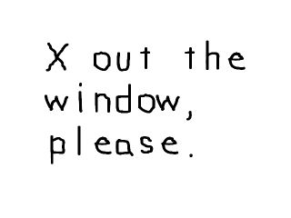
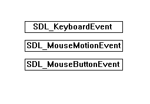
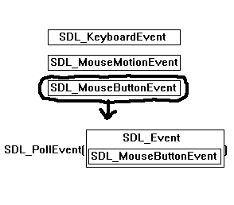

在此之前，你可能习惯于使用cin和cout进行命令驱动编程。本节课将教您如何检查事件和处理事件，这就是事件驱动编程。一个事件，简单说就是一件发生的事情。这可能是“一个按键被按下”、“鼠标发生了移动”、“窗口发生了缩放”，或者是本课中将要介绍的“窗口被用户关闭”。
//头文件 #include "SDL/SDL.h" #include "SDL/SDL_image.h" #include <string> //窗口属性 const int SCREEN_WIDTH = 640; const int SCREEN_HEIGHT = 480; const int SCREEN_BPP = 32; //表面 SDL_Surface *image = NULL; SDL_Surface *screen = NULL;
这里和前面一样，我们有头文件、常量和表面。
//将要用到的事件结构体 SDL_Event event;
现在这个是新的。一个
SDL_Event结构体存储了事件的信息，我们可以用这些信息来处理这个事件。SDL_Surface *load_image( std::string filename )
{
//存储加载好的图像
SDL_Surface* loadedImage = NULL;
//存储优化后的图像
SDL_Surface* optimizedImage = NULL;
//加载图像
loadedImage = IMG_Load( filename.c_str() );
//如果加载成功
if( loadedImage != NULL )
{
//创建优化的图像
optimizedImage = SDL_DisplayFormat( loadedImage );
//释放原先加载的图像
SDL_FreeSurface( loadedImage );
}
//返回优化的图像
return optimizedImage;
}
void apply_surface( int x, int y, SDL_Surface* source, SDL_Surface* destination )
{
//存储偏移量的临时矩形
SDL_Rect offset;
//存入偏移量
offset.x = x;
offset.y = y;
//执行blit操作
SDL_BlitSurface( source, NULL, destination, &offset );
}
这些是我们的表面加载和blit的函数，与前面教程里的代码完全一样。
bool init()
{
//初始化SDL的所有子系统
if( SDL_Init( SDL_INIT_EVERYTHING ) == -1 )
{
return false;
}
//设置窗口
screen = SDL_SetVideoMode( SCREEN_WIDTH, SCREEN_HEIGHT, SCREEN_BPP, SDL_SWSURFACE );
//如果设置出错
if( screen == NULL )
{
return false;
}
//设置窗口标题
SDL_WM_SetCaption( "Event test", NULL );
//如果所有初始化操作都成功
return true;
}
这是初始化函数。这个函数启动了SDL，设置了窗口，设置了窗口标题，如果发生任何错误，会返回false。
bool load_files()
{
//加载图像
image = load_image( "x.png" );
//如果加载出错
if( image == NULL )
{
return false;
}
//如果所有图片加载正常
return true;
}
这是文件加载函数。它加载了图片，如果发生了任何的错误，会返回false。
void clean_up()
{
//释放图像
SDL_FreeSurface( image );
//退出SDL
SDL_Quit();
}
这里我们有程序末尾的清理函数。它清除了表面并退出了SDL。
int main( int argc, char* args[] )
{
//确保程序一直等待quit
bool quit = false;
现在我们进入main函数。
这里有一个quit变量，我们用它来跟踪用户是否想要退出程序。因为程序刚刚启动，所以我们要把它设为false，否则程序会立即退出。
这里有一个quit变量，我们用它来跟踪用户是否想要退出程序。因为程序刚刚启动，所以我们要把它设为false，否则程序会立即退出。
//初始化
if( init() == false )
{
return 1;
}
//加载文件
if( load_files() == false )
{
return 1;
}
现在我们调用先前创建好的初始化函数和文件加载函数。
//将image表面应用到窗口上
apply_surface( 0, 0, image, screen );
//更新窗口
if( SDL_Flip( screen ) == -1 )
{
return 1;
}
然后我们让图片显示在窗口里。
//当用户还不想退出时
while( quit == false )
{
现在我们开始主循环。这个循环会不停地跑，直到用户将quit变量设为true。
//当有事件发生时，我们需要处理它们
while( SDL_PollEvent( &event ) )
{
在SDL中，每当有一个事件发生， 它会被置于事件队列中。事件队列为每个发生的事件保存了事件数据。
所以如果你按一下鼠标按钮，再移动一下鼠标，接着再按下键盘上某个按键，事件队列看起来会像这样：
函数
这段代码的作用是：只要事件队列中还有事件，将它们逐一地取出来。
所以如果你按一下鼠标按钮，再移动一下鼠标，接着再按下键盘上某个按键，事件队列看起来会像这样：

函数
SDL_PollEvent() 的作用是从事件队列底部取出一个事件并将其事件数据粘贴到一个SDL_Event类型的结构体中。

这段代码的作用是：只要事件队列中还有事件，将它们逐一地取出来。
//如果用户点击了窗口右上角的关闭按钮
if( event.type == SDL_QUIT )
{
//退出程序
quit = true;
}
}
}
当用户单击窗口右上角的关闭按钮时，事件的类型会是
SDL_QUIT。译者注:“X out the window” 这个词组采用意译，翻译为“单击窗口右上角的关闭按钮”，虽然有点罗嗦，但如果直译为“叉掉窗口”，会显得很不正式，且表意不明确。
But when the user does that it does not end the program, all it does inform us the user wants to exit the program. 译者注：本句未翻译。这里没理解原作者的意图，“当用户做非关闭操作时，仅仅会通知我们用户想要退出程序”？意思搞反了吧？
因为我们想要这个程序在用户点击关闭按钮时退出，所以我们此时将quit设为true，这样可以中断并退出主循环。 //清理表面并退出SDL
clean_up();
return 0;
}